Windows
Your computerWindows 10 and 11 · 64-bit
Hatchr-Setup.exe · 157 MB
Portable zip, no install needed
First start: if Windows says "Windows protected your PC", click More info, then Run anyway. Hatchr installs itself in a few seconds and opens.
Hatchr watches the accounts you follow on Axiom, X and Telegram. The moment something breaks it has the coin ready: a name traders will search for, the ticker, a picture and a link to the post. Launch it with one click, or let auto mode launch what passes your rules.
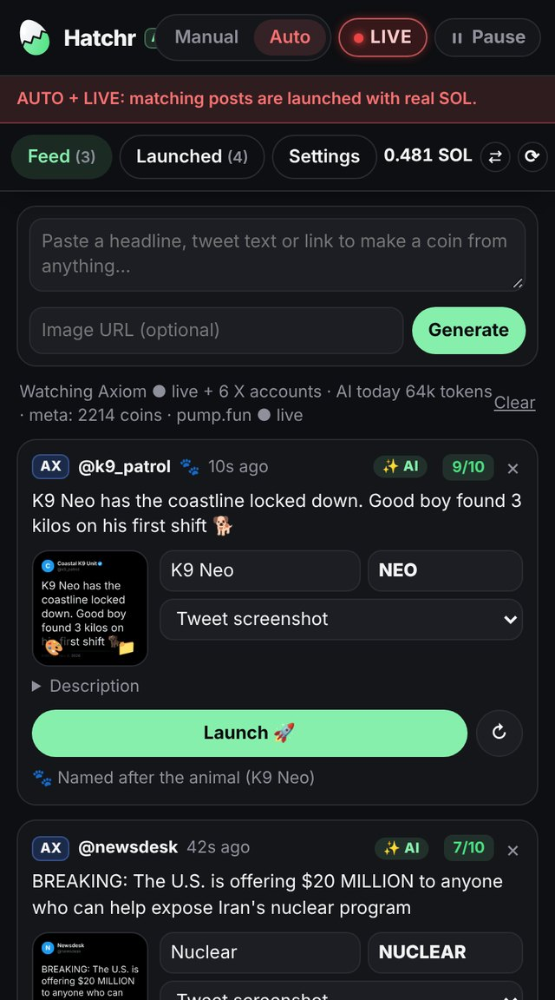
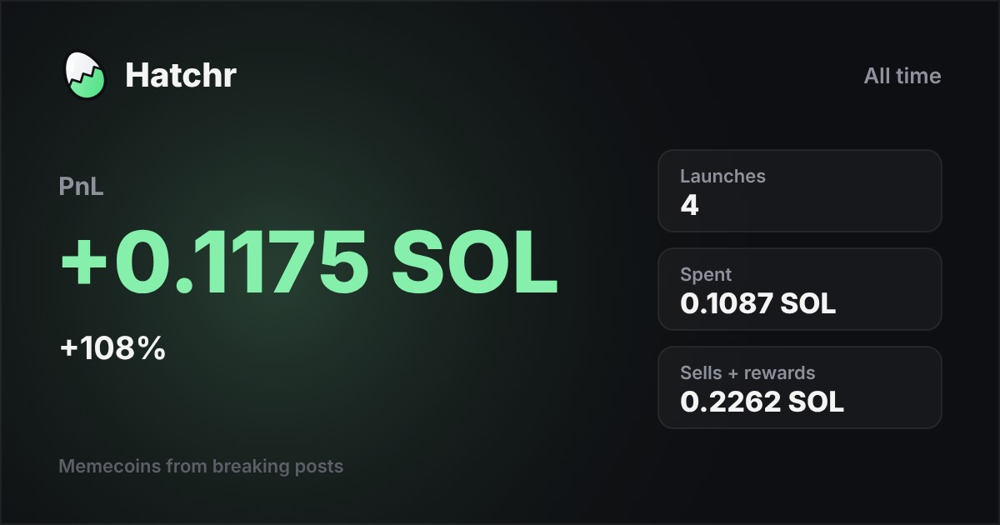
Everything happens in Chrome's side panel, next to the sites you already use.
Hatchr reads Axiom's X tracker, your X lists and public Telegram channels. New posts show up in the feed within seconds.
The AI picks the name and ticker people will search for, scores how memeable the post is, and chooses the picture: the post's photo, a video frame, a tweet screenshot or an AI image.
Press Launch, or let auto mode launch what passes your rules. Then track it, sell it cheaply and collect the creator rewards it earns.
A post breaks, the coin is ready, one click launches it.
Real screens from the extension. Pick one.
$HATCHR is made the way every Hatchr coin is made: launched on pump.fun, straight from the extension. Keep it in your Hatchr wallet and the extension unlocks holder perks.
There is no $HATCHR yet. Any coin using this name today is not ours, even if it links to this website. The real address will only ever appear here, inside the extension and on @hatchrpro.
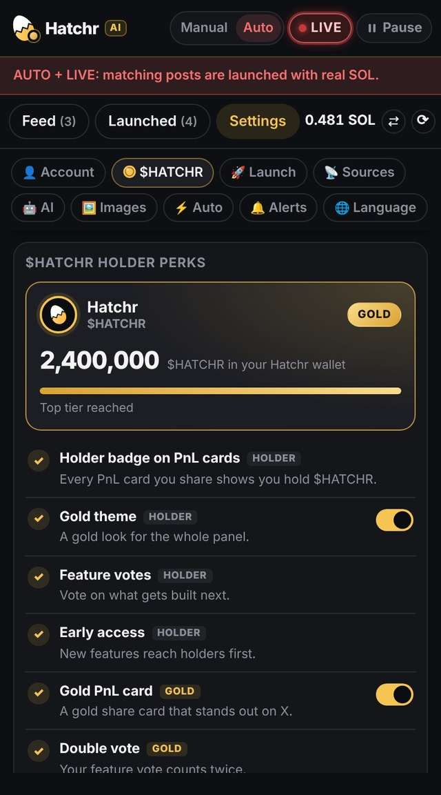
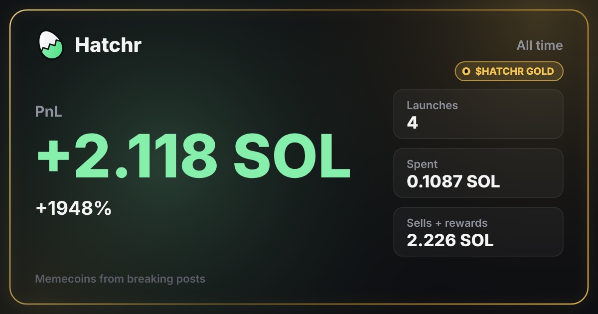
Everything here is extra. Hatchr itself stays free, and nothing that is free today gets locked.
No wallet connecting, no signing, no account. Needs Hatchr 3.5.0 or newer.
On pump.fun, using only the official address shown on this page. Copycat coins with the same name don't count.
Send it to the wallet you use in Hatchr. That address is under Settings → Account.
The extension looks up the wallet's $HATCHR balance and switches your tier on. Sell or move the coins and the tier goes with them.
Read this before you buy any.
Published on launch day, and kept up to date here.
The last releases, straight from the changelog.
Every tool in Hatchr, what it does and where to find it. Settings → Launch means the Launch button inside the Settings tab.
Turn on as many sources as you like. A post seen in two places becomes one card.
Listens to Axiom's live tweet stream for the accounts in your Axiom list: posts, quotes, replies and reposts, each switchable. Axiom only streams while its tracker panel is open, so Hatchr keeps it open and hidden for you.
Settings → SourcesStops Chrome from putting the Axiom tab to sleep, reopens it as a pinned background tab if you close it, and reloads it if it goes quiet. It never reloads the tab you're looking at.
Settings → SourcesReads new posts from any X tab you keep open, best a List of your accounts in its own window. Clicks "Show new posts" by itself. Comes with a preset of accounts traders follow, or set your own.
Settings → SourcesChecks the public channels you list every 30 seconds, no Telegram account needed. Old posts are ignored the first time, so you only get what's new.
Settings → SourcesPaste a headline, a tweet link or any line of text at the top of the feed, and Hatchr makes a coin card from it.
FeedFollows every coin created on pump.fun and every coin that graduates, as it happens, through PumpPortal's free data stream. This feeds the meta even without Axiom.
Settings → SourcesA coin wins when it has the name everybody types. That's where most of Hatchr's brains go.
The AI reads the post and its context, and returns a name, a ticker, a 0–10 memeability score and a picture idea. Without AI, built-in rules use cashtags, hashtags, quotes and key words.
Settings → AIThe AI sees what's running on pump.fun right now: coins running hot, naming patterns that are spreading ("___coin", "fat ___") and coins that already use the post's words. So it names coins the way traders do.
Settings → AI → Meta right now"K9 Neo", "Moo Deng the hippo", "our dog Floki": the coin is named after the animal (K9 Neo) with its name as the ticker ($NEO), and auto mode launches it without needing a score or cooldown.
Settings → AutoRemoves the "Token" and "Coin" an AI likes to add, unless the post says it, and completes cut-off tickers (NUCLEA becomes NUCLEAR).
Settings → AIGroq and Google Gemini are free. Also built in: OpenRouter, OpenAI, Anthropic Claude, DeepSeek, Mistral, xAI Grok, Together AI and Ollama on your own computer. "My own AI" links any other API in the OpenAI or Anthropic format, with extra headers if needed.
Settings → AIThe AI only names posts that could launch: posts blocked by your keywords, cooldown or limits get built-in names. On Groq and Gemini, when one model hits its daily limit Hatchr switches to another and back once it resets. Press ↻ on any card for a fresh AI name.
Settings → AIThe full naming prompt is editable, with a reset button that brings back the default.
Settings → AISends one sample post to your AI and shows the name it came back with and how fast, or the exact error if a key, URL or model name is wrong.
Settings → AIUses the image from the post itself when it has one, in full quality.
For video posts, Hatchr grabs 6 frames and skips black or blank ones. A vision AI picks the frame that shows the subject best, like the dog. Tall videos are fitted into a square over a blurred background.
Settings → ImagesA dark-mode picture of the post with the author's name and avatar. Great for news and headlines.
Cloudflare Workers AI makes about 230 images a day for free; OpenAI GPT Image is paid per image. Use them when the post has no good picture, always, or only when you press 🎨 on a card.
Settings → ImagesNews gets the screenshot, posts with a good photo keep it, famous people get their profile picture, and only mascot-worthy things get an AI image.
Settings → ImagesUpload a file with 📁 or paste any image link on the card. A gradient card with the name is there as a fallback.
Feed cardEvery post becomes a card with the name, ticker, picture and description filled in. Change anything, then press Launch.
FeedLaunches only what passes: include and never-keywords, minimum AI score, cooldown, launches per hour and per day, SOL per day, a minimum balance and no repeat names. Skipped cards say why.
Settings → AutoEvery launch is simulated and shows up as a test coin: picture, tokens you'd hold and the exact cost. With a wallet, Hatchr also builds and signs the real transaction and checks it on-chain without sending it. Nothing is spent.
TEST / LIVE buttonAfter installing and after every Chrome restart, nothing launches by itself until you press ▶ Start. LIVE glows red so you always know when real SOL is used.
HeaderThe coin's X (or Telegram) link points to the post it's about, and you can add your own website and Telegram.
Settings → LaunchOpen coins in Axiom, pump.fun, GMGN, BullX NEO, Padre or DEX Screener, by button or right after each launch.
Settings → LaunchA ding-ding when a coin goes live, a softer ding for test launches, another tone for sells and a chime when a vanity wallet is found. Chrome notifications for launches and failures.
Settings → AlertsThe Launched tab shows how many tokens of each coin your wallet still holds, refreshed every 30 seconds.
LaunchedSells 100% in one click, also after the coin left the bonding curve. Uses the lowest fee that usually lands, resends once with a slightly higher fee if it isn't confirmed in about 20 seconds, then closes the empty token account to get about 0.002 SOL rent back.
LaunchedThe wallet that creates a coin earns a fee on every trade. Hatchr shows what's waiting, claims all coins in one transaction, and can auto-claim once it's worth it.
Launched · Settings → LaunchWhat launches cost, what sells brought back and the rewards you claimed, for 24 hours, 7 days, 30 days or all time, for this wallet or all wallets. Post it on X in one click, with the picture already in your post.
Settings → AccountClick ⇄ next to your balance to see every amount in dollars, euros or pounds, using the live SOL price.
HeaderHatchr makes a fresh Solana wallet inside the extension. Show the private key, copy the address, or download a key file to open the same wallet in Phantom or Solflare.
Settings → AccountGet an address that starts or ends with letters you choose, like PEPE…. The search runs in the background on several cores; a chime and a notification tell you when it's found.
Settings → AccountEvery wallet you replace or remove is kept with its balance, so money left in it is never lost. Switch back any time.
Settings → AccountPumpPortal builds the transaction from your public address. Hatchr signs it locally; the private key never leaves your browser.
One file with all settings, API keys, wallets and launch history, locked with your password. Import it after reinstalling and everything is back.
Settings → AccountEvery key and URL has an ⓘ. Hover or click it for exact steps to get that key, with a button to the right site. Hover a red "RPC blocked" for the fix.
One button checks your wallet, balance, RPC, Pinata, AI and a simulated create transaction, and says exactly what's missing.
SettingsEnglish, Nederlands, Deutsch and Español, or follow your browser's language.
Settings → Language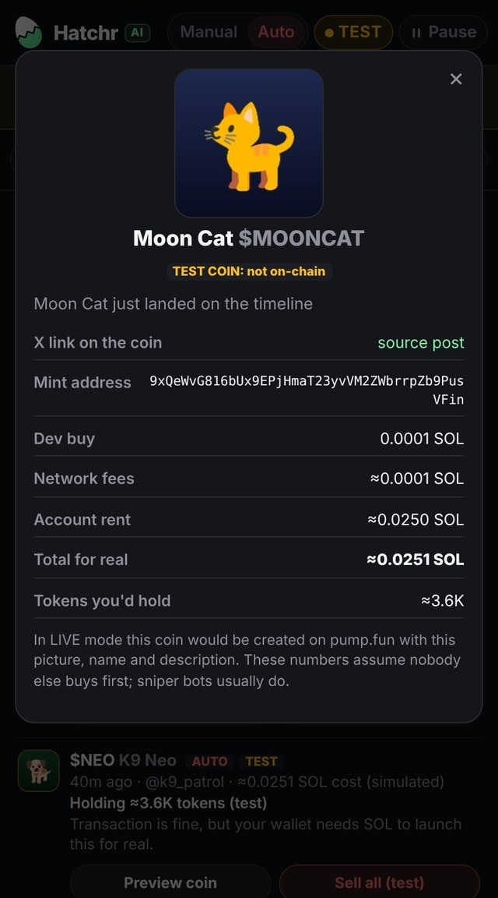
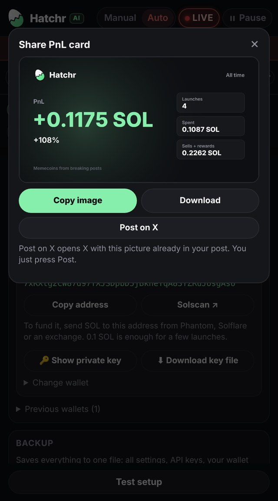
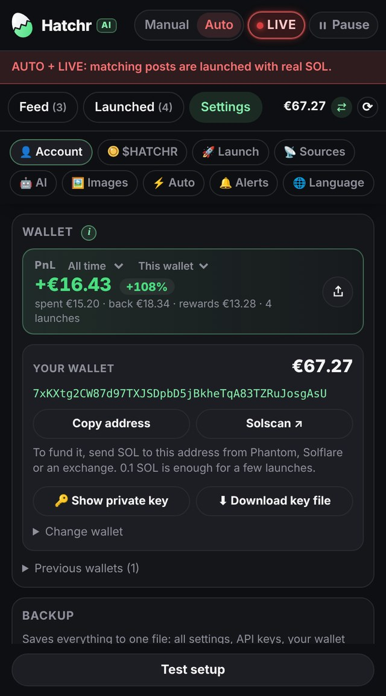
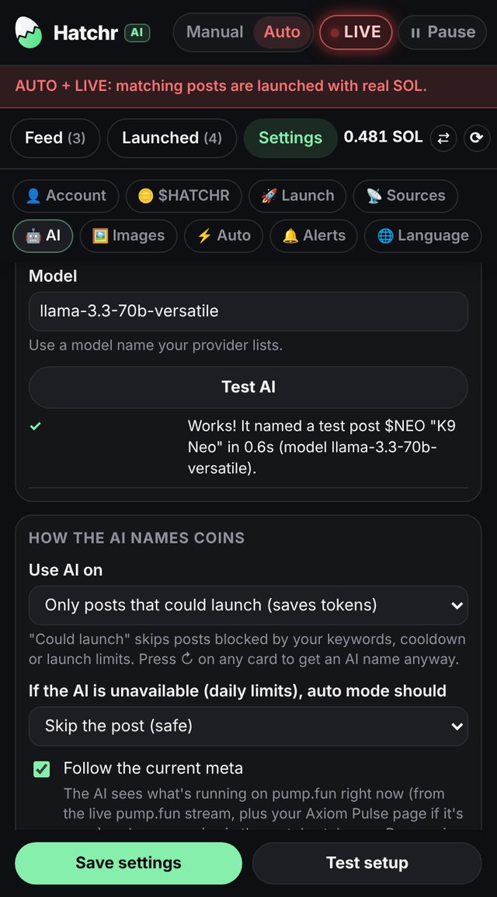
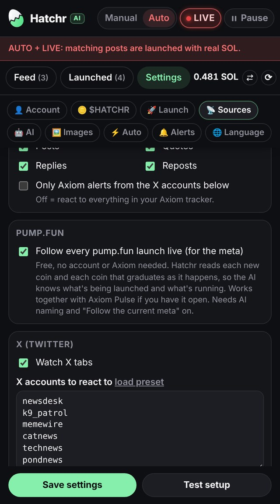
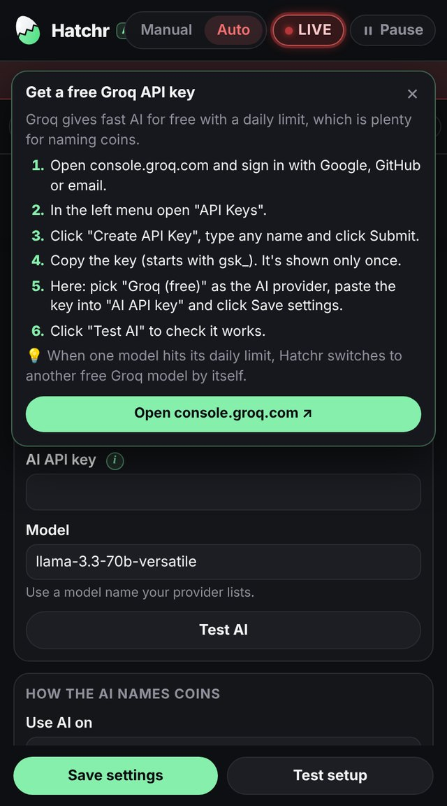
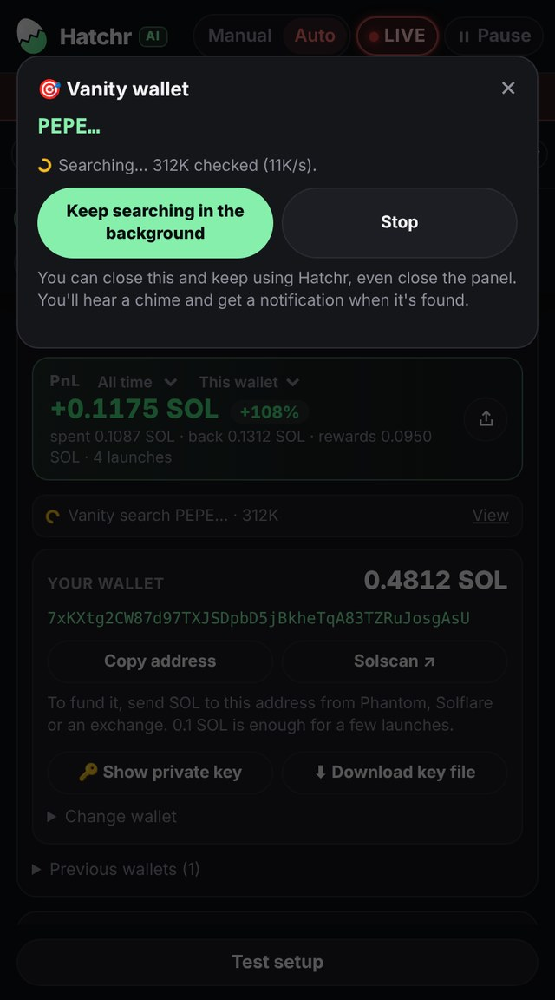
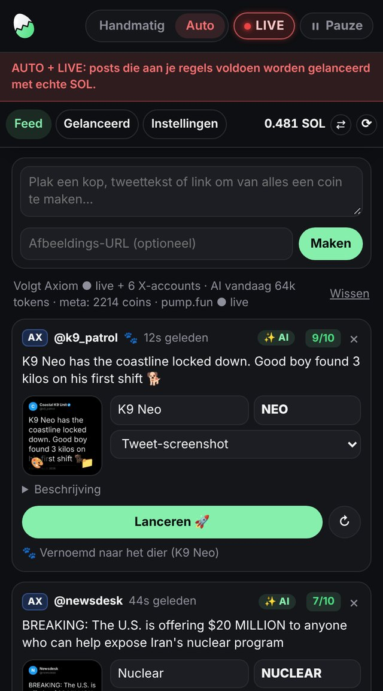
Hatchr has no servers of its own. It connects your browser straight to these services, and only the ones you turn on. Nearly all are free.
| Service | What Hatchr uses it for | Needed? | Cost | Get it |
|---|---|---|---|---|
| Helius | Your Solana RPC: sends transactions, reads balances, holdings and rewards. The free public RPC blocks browser extensions. | for LIVE | Free plan | helius.dev |
| Pinata | Stores each coin's picture and details on IPFS, which pump.fun reads. | for LIVE | Free plan | pinata.cloud |
| PumpPortal | Builds the create, buy, sell and claim transactions (signed in your browser), and streams new and graduating pump.fun coins for the meta and the automatic callouts. | built in | 0.5% fee on trades it builds; stream free | pumpportal.fun |
| pump.fun | Where your coins are created and traded. | built in | Network and rent fees per launch | pump.fun |
| Axiom | X tracker for posts, Pulse page for the meta, and a place to open your coins. | recommended | Free with an Axiom account | axiom.trade |
| X | Posts from the tabs and lists you keep open. | optional | Free | x.com |
| Telegram | Posts from public channels, read through t.me. | optional | Free, no account | telegram.org |
| Groq | Fast AI for names, tickers and scores; also picks video frames. | optional | Free daily limit | console.groq.com |
| Google Gemini | The same jobs as Groq. | optional | Free daily limit | aistudio.google.com |
| Other AI | OpenRouter, OpenAI, Anthropic Claude, DeepSeek, Mistral, xAI Grok, Together AI, Ollama, or any API in the OpenAI or Anthropic format. | optional | Their own pricing; Ollama runs free on your computer | See the ⓘ guide in Settings → AI |
| Cloudflare Workers AI | AI pictures for coins without a good image. | optional | Free, about 230 images a day | dash.cloudflare.com |
| OpenAI GPT Image | AI pictures, paid per image. | optional | paid | platform.openai.com |
| CoinGecko | The SOL price, only while you show amounts in USD, EUR or GBP. | optional | Free, no key | coingecko.com |
| Trading sites | GMGN, BullX NEO, Padre and DEX Screener are only opened when you click "Open in" or turn on auto-open. | optional | Free to open | Settings → Launch |
Hatchr itself is free, and so are the tools it needs. Your money only goes into launches.
Most of a launch's cost is rent for the accounts a new coin needs. A tiny dev buy keeps your money at risk small, and you still earn creator rewards when others trade your coin.
Selling is as cheap as it gets: a priority fee of 0.000001 SOL, and closing the empty token account afterwards returns about 0.002 SOL, more than the sell costs.
The Launched tab shows the exact measured cost of every real launch, and test mode shows the estimate before you spend anything.
Every step has an ⓘ guide inside Hatchr with the exact clicks. Test mode works right after step 1.
Install it, pin it, and click its icon to open the side panel. It starts paused, in test mode.
Settings → Account → Create new wallet, or pick a vanity address. Send it only what you plan to spend; 0.1 SOL is plenty to start. Download the key file and keep it safe.
Sign up at helius.dev, copy your Mainnet URL and paste it in Settings → Launch.
Sign up at pinata.cloud, create an API key and paste the JWT (it starts with eyJ) in Settings → Launch.
Optional but worth it: a Groq or Gemini key in Settings → AI, then press Test AI.
Keep an Axiom tab open, run Test setup, watch a few test launches, then press ▶ Start and switch TEST to LIVE when you're ready.
Yes. The extension is free and so are the services it needs. You pay for launches on Solana (about 0.025 SOL each plus your dev buy), and PumpPortal takes a small fee on trades it builds. Paid AI providers are optional.
No. The extension and the desktop app are free, and every feature that is free today stays free. $HATCHR only adds extras: a holder badge, a gold theme, feature votes and early access.
It looks up how much $HATCHR is in the wallet you use in Hatchr, the same way it reads your SOL balance. Nothing is connected, signed or sent, and the developer never sees your wallet.
No. It unlocks perks inside Hatchr and nothing else. It gives no share in the project or its income, there is no promise of profit, and like any memecoin its price can fall to zero. Only buy what you're fine losing.
Only this website and @hatchrpro on X speak for Hatchr. The real $HATCHR address is shown in the $HATCHR section of this page and inside the extension. A coin or an account that links to hatchr.pro proves nothing: anyone can paste a link. Hatchr will never message you first to ask for money, a wallet connection or a private key.
It's built not to. It starts paused and in test mode, also after every Chrome restart. Auto mode has hourly, daily and SOL-per-day limits and stops below a minimum balance. LIVE pulses red whenever real SOL can be used.
The extension works in Chrome and other Chromium browsers like Brave and Edge. If you'd rather not use a browser, there's a desktop app for Windows, Mac and Linux with the same features.
Open a live coin's callout composer in the Launched tab, write or choose a text, and press Send callout. Hatchr sends it directly and shows the result without opening Pump.fun for each post.
The extension uses your Pump.fun login in the same Chrome profile. In the desktop app, use its Pump.fun button to sign in once; that session is separate from Chrome. Pump.fun still checks your account's wallet holdings and callout limits. If a response is lost, check Pump.fun before trying again.
No, but it's the fastest source. You can use X tabs and Telegram channels instead, and the pump.fun live stream keeps the meta working without Axiom.
In the extension's storage in your own Chrome profile, unencrypted like its other settings. It's only used to sign your own transactions in your browser. Use a burner wallet with small amounts, and set a password on backups.
Start with Groq: it's free and fast. Gemini is a good free second. If you already pay for an AI, pick it in Settings → AI, or link it with "My own AI".
Most memecoins go to zero, and the big accounts get dozens of copycat coins within seconds. Treat every launch as money spent. Creator rewards and cheap sells help, but nothing here is financial advice.
Hatchr names coins after what posts say, which can include real names. Doing so can break pump.fun's rules or trademark and publicity laws where you live. You're responsible for what you launch.
The same Hatchr in its own window, for Windows, Mac and Linux. Axiom and X open inside the app, and your wallet and keys stay on your computer. The Chrome extension is still the quickest way to start.
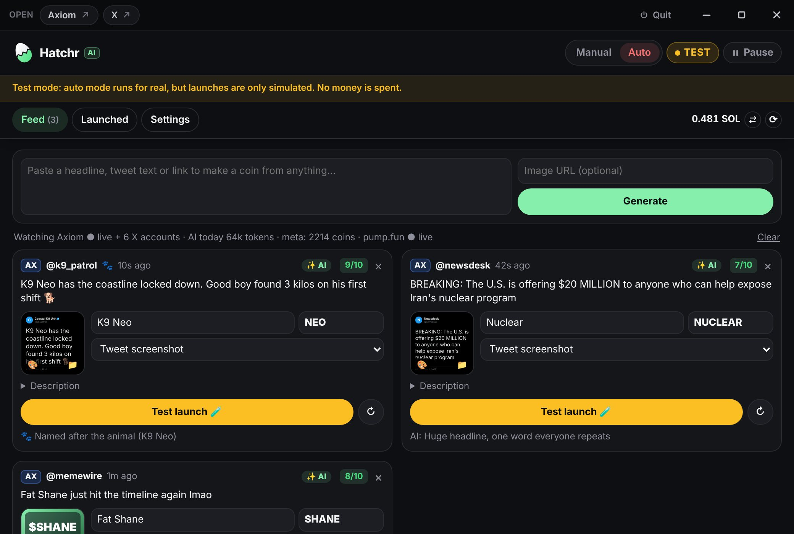
Windows 10 and 11 · 64-bit
Hatchr-Setup.exe · 157 MB
Portable zip, no install needed
First start: if Windows says "Windows protected your PC", click More info, then Run anyway. Hatchr installs itself in a few seconds and opens.
macOS 13 or newer · Apple Silicon (M1 and later)
Hatchr-mac-arm64.zip · 131 MB
Intel Mac (most Macs from before 2021)
First start: open the zip, drag Hatchr to Applications and open it. If macOS stops it, go to System Settings → Privacy & Security and click Open Anyway.
64-bit · most distributions
Hatchr-linux.AppImage · 126 MB
.deb package for Ubuntu and Debian
First start: make it runnable with chmod +x Hatchr-linux.AppImage, then open it.
Same features, own windows. Feed, auto mode, test mode, PnL, vanity wallets and all settings work as in the extension. Use the Axiom and X buttons at the top to open them, and sign in there once.
Keeps running. Closing the window keeps Hatchr running so launches continue. Open Hatchr again or click its tray icon to bring it back, and use Quit at the top of the app to stop it.
Separate from the extension. The app has its own settings and wallet. To move yours over, use Export backup in the extension and Import backup in the app.
Not signed yet, which is why your computer asks once on first start. The app doesn't update itself; new versions appear here and on GitHub.
Effective 15 November 2026 · Hatchr 3.7
The short version: Hatchr has no servers and collects nothing. Your settings, API keys and wallet keys stay in your own browser. Transactions are signed on your device. The only data that leaves your browser goes directly to the services you set up yourself, so they can do their part of the job.
Everything below is kept in the extension's local storage in your Chrome profile. The developer never receives it.
Wallet keys are stored without encryption inside the extension, like the rest of its settings. Use a separate wallet that only holds what you plan to spend.
The desktop app keeps the same data, in the same way, in its own folder on your computer: %APPDATA%\Hatchr on Windows, ~/Library/Application Support/Hatchr on Mac and ~/.config/Hatchr on Linux. It sends nothing beyond what's listed below and doesn't check for updates.
Hatchr sends data only to services needed for a feature you use. Each request goes straight from your browser to that service, under its own privacy policy.
| Service | What is sent | Why |
|---|---|---|
| PumpPortal | Your wallet's public address, the coin's name, ticker and metadata link, trade amounts | Builds the create, buy, sell and claim transactions, which Hatchr signs locally. Buys are only built by the automatic callouts and by CA buy, when you switch them on. |
| PumpPortal data stream | A request to receive new and graduating coins. With automatic callouts on: also the addresses of coins whose trades Hatchr follows, and, for "call out my own buys", your wallet's public address | Follows the pump.fun meta, measures coins against your callout filters and notices your own buys. Runs only while AI naming and the meta, or automatic callouts, are on. |
| Pump.fun callouts | The coin address, your callout text, and the Pump.fun login cookies managed by your browser or the desktop app | Publishes a callout when you press Send callout, or by itself if you switched automatic callouts on (off by default). The text is public. Hatchr does not copy the session cookies into its settings or backups. |
| Your Solana RPC (e.g. Helius) | Signed transactions; balance, token, transaction and reward lookups for your wallet; name lookups for coins; with "call out my own buys" on, a live subscription to your wallet's public address; with copy trade on, a live subscription to the public addresses of the wallets you copy; with Boost on, the network's recent priority fees | Sends transactions, reads balances and notices your own buys |
| Jupiter | Your wallet's public address, the coin's address and the buy amount | Builds the buy for a coin PumpPortal cannot buy (one that is not priced in SOL). Only while CA buy is on. |
| DexScreener | The addresses of the coins in your wallet; nothing else about you | Reads their prices for pump alerts, for the watchlist, and for the automatic exits of coins Hatchr bought once they left the bonding curve. Only while one of them is on. |
| Telegram (your own bot) | Your bot's token and the alert text: coin, price move, what your holding is worth | Sends pump alerts, and buys and callouts if you choose, to your phone. Only if you set up phone alerts. |
| The coin's own metadata file (usually an IPFS gateway such as ipfs.io) | Only a request for that public file; nothing about you | Reads a coin's links, description and picture for your callout filters and for the launch watch. Only while one of them is on and needs them. |
| Pinata (IPFS) | The coin image and metadata, including the link to the source post | Coin images must be public. Anything uploaded to IPFS is public and permanent. |
| Your AI provider | The text of a post, its context, and a short summary of current coin names | Suggests a name, ticker and score. Optional. |
| Cloudflare Workers AI or OpenAI | An image description; frames from a video post for picking the best one | Generates or chooses the coin picture. Optional. |
| hatchr.pro | Only a request for a small public file with the official $HATCHR address and the tier amounts; nothing about you | Tells the extension which coin is the real $HATCHR. Your $HATCHR balance itself is read through your Solana RPC. |
| CoinGecko | Only a request for the SOL price | Shows amounts in USD, EUR or GBP. Optional. |
| X, Axiom, Telegram and their media servers | Normal page and media requests from your browser | Reads the posts you follow and their media |
| Trading-site links (Axiom, pump.fun, GMGN, BullX, Padre, DEX Screener) | The coin address when you choose to open its page | Opens the coin's page. Direct Pump.fun callouts are described separately above. |
Data stays until you clear it in the extension (Clear feed, Clear launch log, Remove wallet, Discard) or uninstall Hatchr, which deletes all of it. Uninstalling the desktop app keeps its folder, so delete that folder too if you want everything gone. Backups you export are files on your own computer; give them a password, because they contain your wallet keys and API keys.
Hatchr is for adults who understand cryptocurrency risk. It is not meant for anyone under 18.
If this policy changes, the new version will be posted on this page with a new effective date.
Hatchr 3.3
Most problems come down to a missing key or a blocked service. Start with Settings → Test setup: it checks your wallet, RPC, Pinata, AI and a simulated launch, and shows exactly which one fails. Every key also has an ⓘ guide.
Still stuck? Write to us through the Support tab on Hatchr's Chrome Web Store page, and include the error text shown on the card.
News and updates are on X at @hatchrpro. It is our only X account: anyone else using the Hatchr name is not us.
The free public Solana RPC refuses browser extensions. Create a free account at helius.dev, copy your Mainnet RPC URL and paste it in Settings → Launch → Solana RPC URL, then click Save settings. Hovering the red "RPC blocked" in Hatchr shows these steps too.
Coin images and metadata are stored on IPFS through Pinata. Create a free account at pinata.cloud, go to API Keys → New Key, and copy the JWT (the long value starting with eyJ) into Settings → Launch → Pinata JWT.
Hatchr starts paused, also after a Chrome restart: press ▶ Start. If it's running, each skipped card shows why: AI score below your minimum, a keyword rule, cooldown, or an hourly, daily or SOL limit. Adjust them in Settings → Auto.
Free AI keys have a daily limit per model. On Groq and Gemini, Hatchr switches to another model your key can use and comes back once the limit resets. Use Test AI in Settings → AI to see the exact error: 401 means a wrong key, 404 a wrong URL or model name.
Keep an axiom.trade tab open; Hatchr keeps its X tracker connected in the background. The feed should say Axiom ● live. After installing or updating Hatchr, reload the Axiom tab once. If you use an X tab instead, keep it in its own window so Chrome doesn't pause it.
Sell all uses the lowest fee that usually lands and resends once with a higher fee if needed. If the coin moves fast, raise Sell slippage a little in Settings → Launch. The error under the coin says what happened.
Use Settings → Account → Export backup with a password, then Import backup after installing Hatchr again. Everything comes back, including API keys, wallets and launch history.
Risk: memecoins are extremely risky and most go to zero. Only use money you can afford to lose. You are responsible for the coins you launch, including names and images of real people or brands. Nothing in Hatchr is financial advice.
Free, starts in test mode, and your keys never leave your browser.
Hatchr in its own window. The Chrome extension is still the quickest way to start.